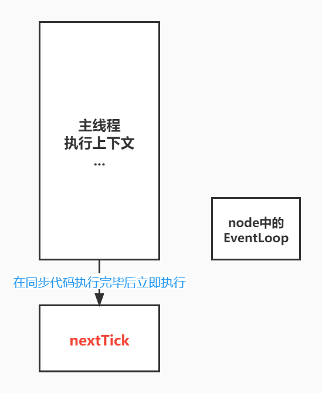

日常的学习笔记，包括 ES6、Promise、Node.js、Webpack、http 原理、Vue全家桶，后续可能还会继续更新 Typescript、Vue3 和 常见的面试题 等等。
nextTick
参考文献 JavaScript运行机制详解
首先，process.nextTick是node自己实现的方法，并不属于node中的EventLoop，他的优先级也比promise更高。
1 | Promise.resolve().then(() => { |
我们可以看到，上述执行队列中，会先输出nextTick，再输出promise。
原因就是因为nextTick的执行位置，他会在执行上下文栈执行完毕后，立即执行nextTick。

Node中的EventLoop
参考文献 Node.js事件循环、定时器和process.nextTick()
为了更好的学习和理解EventLoop与nextTick的关系，我们也可以参考下图。
1 | 本阶段执行已经被 setTimeout() 和 setInterval() 的调度回调函数。 |
这里每一个阶段都对应一个事件队列，当 event loop 执行到某个阶段时会将当前阶段对应的队列依次执行。当该队列已用尽或达到回调限制，事件循环将移动到下一阶段。
我们可以通过以下代码来感受一下上述概念。
1 | setTimeout(() => { |
这里我们可以发现，timeout 会在 setImmediate 之前输出。
但是这里会有一个问题，多次执行之后我们会发现，timeout 也会在 setImmediate 之后输出。
原因是因为当前默认执行主栈代码，主栈代码执行完毕后，再去执行宏任务队列。但是因为我们的定时器设定的时间是0，可能会有几毫秒的延迟，所以当主栈代码执行完毕后，定时器并没有到达指定的执行时间，所以会存在两个结果输出情况不一致的情况。
我们可以称他为 准备阶段时间。
假设我们目前存在这样一段代码，从I/O事件中执行setImmediate 与 setTimeout。
1 | fs.readFile('./test.txt', 'utf-8', () => { |
我们的代码在执行时，会先检测是否存在 timer阶段，也就是定时器。没有的话，会去检测 poll队列（I/O事件）是否为空。检测完毕后，再去检测是否存在 setImmediate，也就是 check阶段 。检测完毕后，会进行轮询，也就是下一轮检测。
这样我们可以总结一下：
- 检测Poll队列中是否为空，如果不为空则执行队列中的任务，直到超时或者全部执行完毕。
- 执行完毕后检测setImmediate队列是否为空，如果不为空则执行check阶段，如果为空则等待时间到达。时间到达后回到timer阶段。
- 等待时间到达是可能会出现新的callback，此时也在当前阶段被清空。
面试题
搞清楚了Node中的EventLoop，那么EventLoop和微任务的关系又是什么样的呢？
我们可以看一道曾经腾讯的面试题
1 | setTimeout(() => { |
根据我们之前学过的知识我们可以推导出这道题的结果。
Node在执行时，会先将主执行栈代码执行完毕，这时输出结果 c 、e，将promise.then()放入微任务队列。然后会拿出一个宏任务并执行，先清空微任务队列，这时 *输出结果 d。随后再执行定时器回调，*输出结果 a 。然后根据Node中EventLoop的执行顺序，timer清空完毕后进入poll阶段，检查是否存在I/O事件。随后检测setImmediate队列，并将 输出结果 b。
本篇文章由莫小尚创作，文章中如有任何问题和纰漏，欢迎您的指正与交流。
您也可以关注我的 个人站点、博客园 和 掘金，我会在文章产出后同步上传到这些平台上。
最后感谢您的支持！